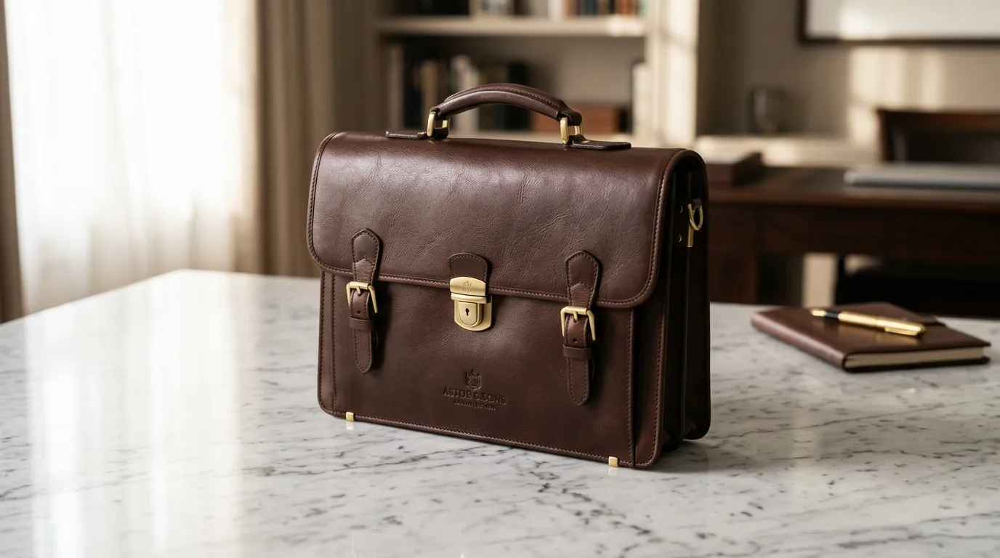

Apa yang Dimaksud dengan Merchandise Seri Executive Collection?
Merchandise seri Executive Collection adalah kategori produk premium yang dikhususkan untuk penerima pada level strategis, seperti klien besar, mitra bisnis jangka panjang, atau pihak eksternal yang memiliki peran penting dalam hubungan bisnis perusahaan.
Berbeda dengan merchandise reguler yang biasanya diproduksi dalam jumlah besar untuk distribusi luas, seri Executive Collection cenderung diproduksi dalam jumlah terbatas dengan tingkat kurasi yang lebih tinggi pada setiap detailnya.
Pendekatan ini membuat produk dalam seri ini terasa lebih personal dan istimewa dibandingkan merchandise standar yang dibagikan secara umum.
Konsep Executive Collection juga sering dikaitkan dengan gaya desain yang lebih formal dan elegan, sejalan dengan karakter penerimanya yang umumnya berada pada posisi pengambil keputusan di perusahaan masing-masing.
Oleh karena itu, pemilihan warna, material, dan bentuk produk cenderung lebih konservatif dibandingkan merchandise dengan gaya kasual atau playful.
Produk Apa Saja yang Termasuk Kategori Executive Collection?
Produk yang termasuk kategori Executive Collection meliputi tas kerja kulit premium, dompet kartu bisnis, pulpen eksekutif, jam meja elegan, serta set alat tulis dengan material logam dan kulit berkualitas tinggi.
Tas kerja kulit premium menjadi salah satu produk andalan dalam kategori ini karena fungsinya yang relevan dengan aktivitas kerja eksekutif sekaligus menampilkan kesan profesional yang kuat. Produk ini biasanya menggunakan material kulit asli atau sintetis berkualitas tinggi dengan jahitan rapi dan detail logo yang halus namun tetap terlihat jelas.

Dompet kartu bisnis dan pulpen eksekutif juga menjadi pilihan populer karena ukurannya yang ringkas namun tetap memberikan kesan mewah saat digunakan dalam pertemuan bisnis formal. Kedua produk ini sering dijadikan hadiah simbolis pada momen penandatanganan kerja sama atau pertemuan strategis dengan mitra bisnis.
Selain itu, jam meja elegan dan set alat tulis berbahan logam turut melengkapi kategori ini sebagai pelengkap ruang kerja eksekutif. Produk-produk tersebut umumnya ditempatkan di meja kerja penerima, sehingga identitas brand perusahaan pemberi hadiah dapat terlihat secara konsisten dalam jangka waktu yang lama.
Mengapa Seri Executive Collection Cocok untuk Klien dan Mitra Bisnis?
Seri Executive Collection cocok untuk klien dan mitra bisnis karena mampu merepresentasikan tingkat penghargaan yang lebih tinggi, sekaligus mencerminkan keseriusan perusahaan dalam menjaga hubungan bisnis jangka panjang.
Pemberian hadiah dengan kualitas premium kepada klien besar menunjukkan bahwa perusahaan menempatkan relasi tersebut pada prioritas yang tinggi, berbeda dengan pemberian souvenir standar yang cenderung bersifat umum.
Kesan ini penting dalam membangun kepercayaan, terutama pada tahap awal kerja sama atau momen penting seperti perpanjangan kontrak bisnis.
"Semakin sering digunakan, semakin besar pula peluang identitas brand pemberi hadiah untuk terus hadir dalam aktivitas bisnis penerima."
— Nazhima Nadine, Penulis Merchandise Kantor
Selain itu, produk dalam kategori Executive Collection umumnya memiliki daya tahan dan fungsi yang relevan dengan aktivitas kerja penerima, sehingga peluang penggunaannya dalam jangka panjang cukup tinggi. Semakin sering digunakan, semakin besar pula peluang identitas brand pemberi hadiah untuk terus hadir dalam aktivitas bisnis penerima.
Bagaimana Cara Memilih Produk Executive Collection yang Sesuai?
Cara memilih produk Executive Collection yang sesuai dilakukan dengan mempertimbangkan profil penerima, konteks acara, serta keselarasan desain produk dengan identitas visual perusahaan pemberi hadiah.
Profil penerima menjadi pertimbangan utama, misalnya mempertimbangkan apakah penerima lebih sering bekerja secara mobile sehingga membutuhkan produk yang ringkas dan mudah dibawa, atau lebih banyak beraktivitas di ruang kerja tetap sehingga produk seperti jam meja atau set alat tulis menjadi pilihan yang lebih relevan.
Konteks acara turut memengaruhi jenis produk yang dipilih. Untuk momen formal seperti penandatanganan kerja sama, produk dengan kesan simbolis seperti pulpen eksekutif sering menjadi pilihan utama, sementara untuk kunjungan resmi jangka panjang, produk fungsional seperti tas kerja premium dapat lebih memberikan kesan mendalam.

Kesimpulan
Merchandise kantor eksklusif seri Executive Collection menjadi pilihan yang tepat untuk memperkuat hubungan bisnis dengan klien besar dan mitra strategis, melalui kombinasi material premium, desain elegan, dan relevansi fungsi produk.
Pemilihan produk yang mempertimbangkan profil penerima serta konteks acara akan membantu memastikan kesan yang ditampilkan benar-benar sesuai dengan tujuan perusahaan dalam membangun relasi bisnis jangka panjang.